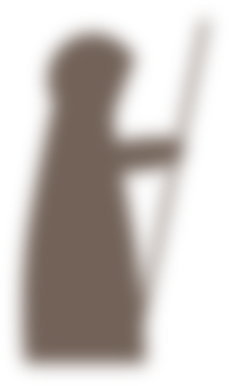

1. De tocht naar de tempel der geschriften
1. In den beginne was er het woord en het woord was van de profeet Queneau en droeg de titel Stijloefeningen. 2. Het was in die dagen dat Jezus dat geschrift wenste te lezen, edoch nergens een exemplaar kon vinden. 3. En Jezus zette voet richting het Plein van Aankomst. 4. En in een lendendoek die hij rond zijn borst gewikkeld had, droeg Hij Zijn zoon die Hij bij Maria Magdalena had verwekt. 5. En Hij liep langs de droog staande waterputten en door een kale negorij om bij de Tempel der Geschriften te geraken, alwaar Jezus een exemplaar hoopte te kunnen lenen.
2. De ontmoeting met de vrouw
1. En voordat Hij de tempel betrad, hield Hem een vrouw staande. 2. Zij zeide tot Hem in het Engels met een Frans accent: Is dit het Huis van de Boodschapper? 3. En Jezus moest haar teleurstellen want het Huis van de Boodschapper zat hier al lang niet meer en Hij zeide tot haar: Neen, dat zeide Hij en Hij zeide: Thans kunt u beter naar de Weg van het Raadhuis gaan. 4. En de vrouw luisterde niet naar Jezus, zij keek naar achteren waar een man op een muilezel gezeten achterwaarts zich aan het verwijderen was. 5. En de vrouw bedankte Jezus niet en zij rende achter de man en de muilezel aan.
3. Het zoeken naar het geschrift
1. En het was op de tweede verdieping van de Tempel der Geschriften dat Jezus bij de Q aan het zoeken was naar het Boek Queneau maar deze niet kon vinden. 2. En Hij besloot voor de zekerheid op de Zuil der Aanwezigheid te controleren of het geschrift inderdaad uitgeleend was. 3. En op de Zuil stond geschreven: Stijloefeningen is aanwezig op de daartoe bestemde plek. 4. En Jezus besloot samen met een onderpriester te zoeken, want vier ogen zien meer dan twee, maar ook de onderpriester kon het geschrift niet vinden en de zoektocht bleef zonder vrucht.
4. Tweede kans
5. En de onderpriester zeide tot Jezus: in de catacomben ligt nog een exemplaar. 6. En Jezus liet een bode sturen met de vraag naar het geschrift. 7. En de bode bleef weg voor de duur van het eten van drie appels en kwam terug met de boodschap van de Hogepriester dat het Boek Queneau op de tweede verdieping lag waar Jezus zich reeds bevond. 8. En in de weg naar buiten gooide Jezus, die kwaad geworden was, alle stellingen om die hij tegenkwam, want hij had een agressieve aard.
4. Schoenen kopen
1. Op het Plein van Bomen en Schaduw, vlak bij Zijn woning, kocht Jezus een paar sandalen voor zijn zoon. 2. Want het ventje kon al aardig lopen en Jezus wilde niet dat hij zijn voetjes brandde aan het zand.
